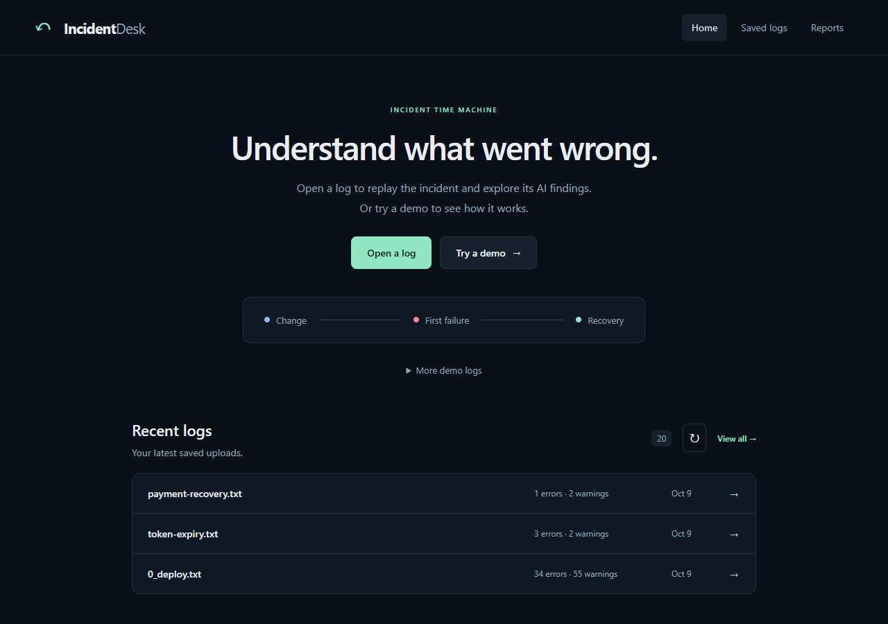

From upload to findings.
The dashboard saves the raw log to Cloud Storage and its metadata to Firestore, then queues only the log ID on Pub/Sub. A private agent picks it up, investigates, and writes findings back for the dashboard to poll.
Upload a log, and an AI agent investigates it: severity, a tentative cause, the evidence lines behind it, and safe next steps. It compares the log with similar past incidents in BigQuery, and every hop runs on managed Google Cloud services behind private egress.
The dashboard saves the raw log to Cloud Storage and its metadata to Firestore, then queues only the log ID on Pub/Sub. A private agent picks it up, investigates, and writes findings back for the dashboard to poll.
An ADK agent sends one bounded request to Gemini on Vertex AI. The log is treated as data, never as instructions. The model cannot run SQL, call tools, or write cloud resources; application code does all of that.
Each finished investigation becomes a BigQuery row. The next log from the same service or failure category gets up to five recent matches as context, and the dashboard reports seven-day trends from the same table.
Project in us-central1. Raw text never travels through the queue, and the agent is reachable only through authenticated Pub/Sub push.
The agent makes exactly one model call (max_llm_calls=1) at temperature 0 and validates the answer against a typed schema: severity, summary, likely cause and up to five recommendations. Logs are capped at 1 MiB and only the first 24,000 characters go to the model. The instructions tell it to treat the log and past incidents as untrusted data and never to claim a confirmed root cause.
Pub/Sub can deliver twice, so the agent takes a Firestore lease before working and skips logs that are already complete. Findings are saved before the analytics write, so a BigQuery retry never repeats the paid model call. The BigQuery load uses a deterministic job ID, so a replayed message cannot add a second incident row. Failures return 503 for a retry, and after about five attempts the message goes to a dead-letter queue.
The history lookup is a fixed, parameterised query over the last seven days. It matches on service or failure category, excludes the current log, and caps each query at 50 MiB billed. Reporting adds a partition filter and a shared 60-second cache that also covers failures, so public refreshes cannot pile up jobs. Partitions expire after seven days.
Both services send all outbound traffic through a custom VPC subnet using Direct VPC egress. A private DNS zone points Google API names at private.googleapis.com. The firewall allows HTTPS to that range and denies every other IPv4 destination. The dashboard keeps its public URL; the agent answers only authenticated Pub/Sub push and returns 403 to anyone else.
Three real investigations from the live app, on synthetic logs. Pick one and run it. The logs and findings are exactly what the API returned; only the step animation is replayed here.
Pick a log, then run the investigation.
Public Cloud Run URL, scaled to zero when idle. Upload a synthetic log to watch a real investigation; do not upload credentials or real data.

Cloud Build tests, audits and scans both services before anything is published. Each release deploys the same build-ID image it scanned.
| Pipeline | Trigger | What happens |
|---|---|---|
| cloudbuild-ci.yaml | Pull request into dev or main | Unit tests, Bandit, pip-audit, then build both images and scan them with Trivy (vulnerabilities and secrets; any HIGH or CRITICAL finding fails) |
| cloudbuild.yaml | Merge into dev | The same gates, then publish both images to Artifact Registry and deploy the private agent first, then the dashboard |
| Control | Status | How |
|---|---|---|
| No stored keys | LIVE | Attached service accounts via ADC; no JSON keys and no GCP secrets in GitHub |
| Private agent | LIVE | Cloud Run IAM on the agent; Pub/Sub pushes with an OIDC token from a dedicated identity |
| Egress lock-down | LIVE | Direct VPC egress, private API DNS, allow-HTTPS-to-Google-APIs firewall, deny other IPv4 |
| Spend limits | PARTIAL | Max one instance, agent concurrency one, 50 MiB query caps; these limit parallelism, not total spend |
Sail on to a desert launch site.
Visit Orbital Expeditions → Back to the islands